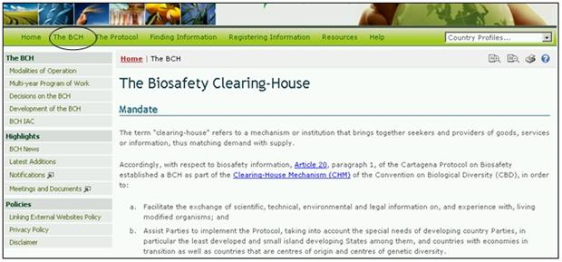

URL: http://bch.cbd.int/about/
La página introductoria de esta sección explica el mandato del CIISB y proporciona antecedentes sobre el desarrollo del sitio.
La información acerca del CIISB se divide en tres secciones:
-
El CIISB, proporciona información sobre las Modalidades de Funcionamiento, Programa de Trabajo Plurianual, Decisiones sobre el CIISB, Implementación del CIISB y del Comité Asesor Oficioso del CIISB (CAO-CIISB);
-
Noticias, ofrece novedades sobre el CIISB, últimas adiciones, notificaciones y reuniones y documentos;
-
Políticas, proporciona información sobre Política de enlaces a sitios web externos, Política de privacidad y Declinación de Responsabilidad.
El contenido de la sección del CIISB se puede acceder desde el menú ubicado al lado izquierdo de la página del Centro de Intercambio de Información sobre seguridad de la Biotecnología, o desde el menú despegable de la barra de navegación.

Figura 9
Figura 10